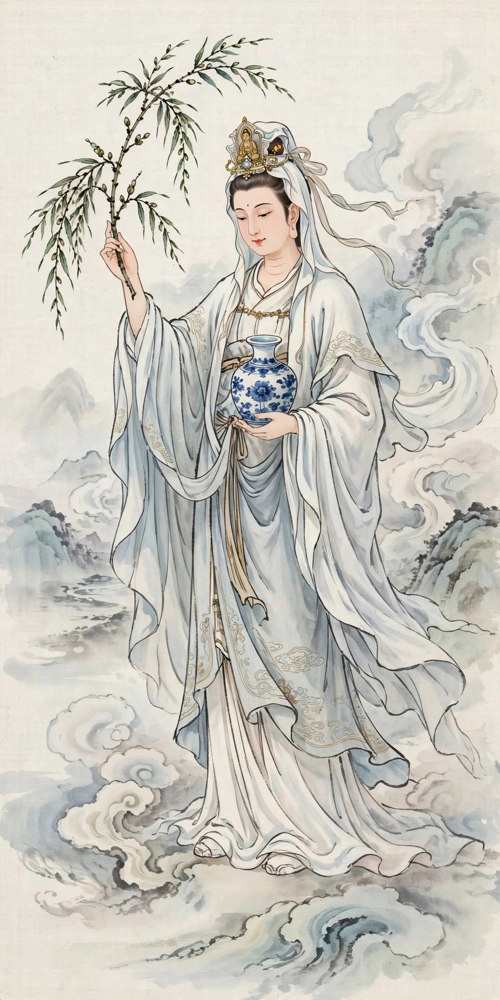

Avalokitesvara is the spelling without diacritics of Avalokiteśvara, the Mahayana bodhisattva of compassion, known across Asia as Guanyin (China), Kannon (Japan), and Chenrezig (Tibet).

This page covers the name itself: Sanskrit Avalokiteśvara combines avalokita 'looking down' and īśvara 'lord'. An earlier form, Avalokitasvara ('lord who is perceived by sound'), underlies the Chinese translation Guanyin, 'Perceiver of the Sounds [of the world]'. The bodhisattva's cult spread along the Silk Road; famous depictions include the thousand-armed statues at Sanjūsangen-dō in Kyoto and the great Guanyin of Nanshan in Hainan. His mantra Om Mani Padme Hum is the best known in Buddhism.
Avalokiteśvara (main article) · Mahayana
Recreated from memory.